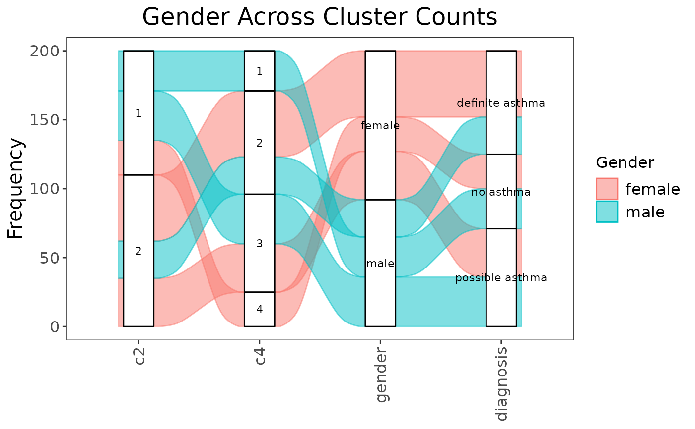

Alluvial plot of patients across cluster counts and important features
Source:R/alluvial_plot.R
alluvial_cluster_plot.RdThis alluvial plot shows how observations in a similarity matrix could have been clustered over a set of clustering functions.
Usage
alluvial_cluster_plot(
cluster_sequence,
similarity_matrix,
dl = NULL,
data = NULL,
key_outcome,
key_label = key_outcome,
extra_outcomes = NULL,
title = NULL
)Arguments
- cluster_sequence
A list of clustering algorithms.
- similarity_matrix
A similarity matrix.
- dl
A data list.
- data
A data frame that contains any features to include in the plot.
- key_outcome
The name of the feature that determines how each patient stream is coloured in the alluvial plot.
- key_label
Name of key outcome to be used for the plot legend.
- extra_outcomes
Names of additional features to add to the plot.
- title
Title of the plot.
Value
An alluvial plot (class "gg" and "ggplot") showing distribution of a feature across varying number cluster solutions.
Examples
input_dl <- data_list(
list(gender_df, "gender", "demographics", "categorical"),
list(diagnosis_df, "diagnosis", "clinical", "categorical"),
uid = "patient_id"
)
sc <- snf_config(input_dl, n_solutions = 1)
#> ℹ No distance functions specified. Using defaults.
#> ℹ No clustering functions specified. Using defaults.
sol_df <- batch_snf(input_dl, sc, return_sim_mats = TRUE)
sim_mats <- sim_mats_list(sol_df)
clust_fn_sequence <- list(spectral_two, spectral_four)
alluvial_cluster_plot(
cluster_sequence = clust_fn_sequence,
similarity_matrix = sim_mats[[1]],
dl = input_dl,
key_outcome = "gender", # the name of the feature of interest
key_label = "Gender", # how the feature of interest should be displayed
extra_outcomes = "diagnosis", # more features to plot but not colour by
title = "Gender Across Cluster Counts"
)
